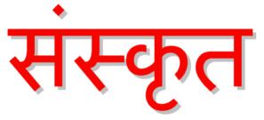
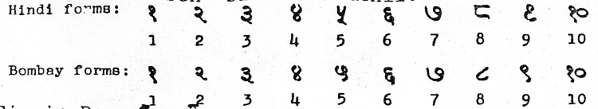
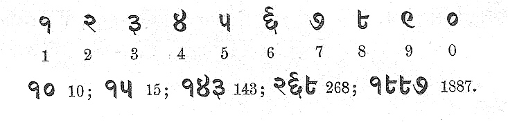
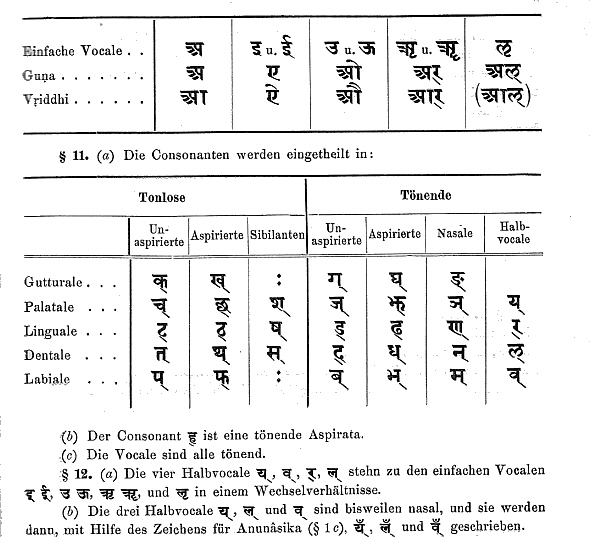

mailto:payer@payer.de
Zitierweise | cite as:
Payer, Alois <1944 - >: Sanskritkurs. -- Devanāgarī = देवनागरी. -- 11. Schriftübung 11. -- Fassung vom 2009-01-27. -- URL: http://www.payer.de/sanskritkurs/schrift11.htm
Erstmals hier publiziert: 2008-11-24
Überarbeitungen: 2009-01-27
Anlass: Lehrveranstaltungen 1980 - 1984
©opyright: Dieser Text steht der Allgemeinheit zur Verfügung. Eine Verwertung in Publikationen, die über übliche Zitate hinausgeht, bedarf der ausdrücklichen Genehmigung des Verfassers
Dieser Text ist Teil der Abteilung Sanskrit von Tüpfli's Global Village Library
Falls Sie die diakritischen Zeichen nicht dargestellt bekommen, installieren Sie eine Schrift mit Diakritika wie z.B. Tahoma.
Die Devanāgarī-Zeichen sind in Unicode kodiert. Sie benötigen also eine Unicode-Devanāgarī-Schrift.
Folgende zwei Schreibweisen sind gebräuchlich:

Variante in der Schrifttype von Kielhorns Grammatik:

A) Schreiben Sie in Devanāgarī:
123 654 587 908 1007 9876 34 12 14 16 27 38 49 50 12 23 34 45 56 67 78 89 98 76 65 54 43 32 21
B) Lesen und transliterieren Sie:
१२ २३ २४ ५३६ ६५ ८७ १९४४ २००८ ९९० ८७ ७६ ६५ ५४ ४३ ३२ २१ १९ २८ ८३ ७४ ५७ ६६
